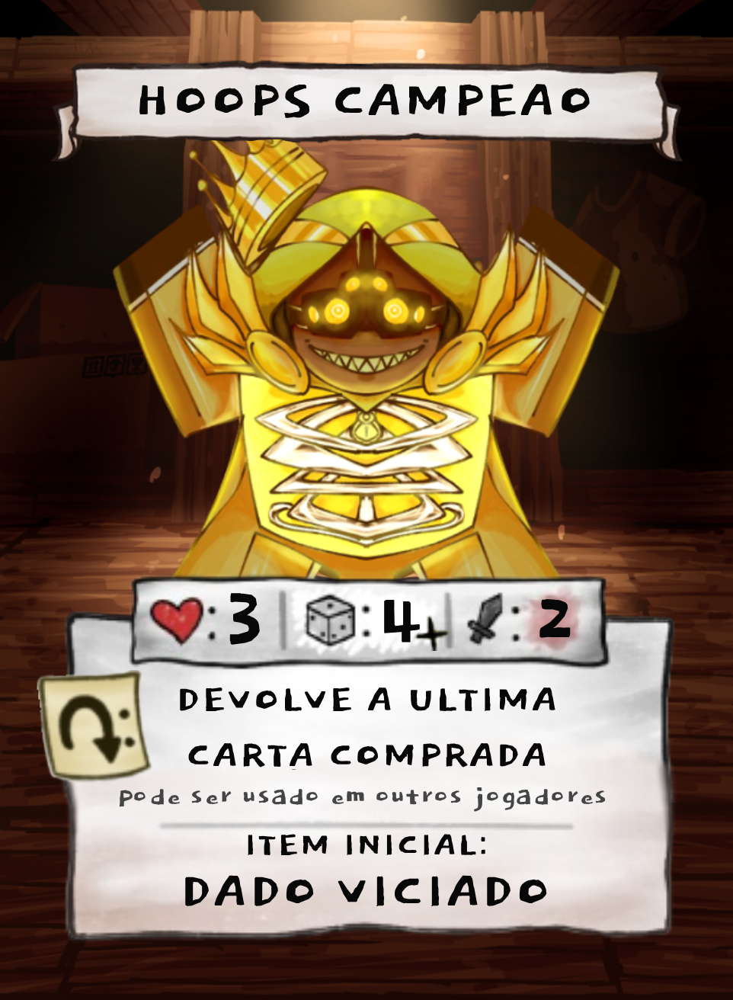

Hoops Campeão
O perdedor

O perdedor
EGOISTA, OPURTUNISTA, SALAFRAIO E EGOCENTRICO.
Muva: Eu acho engraçado como eu fiz todas as cartas sem pensar numa lore pra depois eu só improvisar mó critica social pra lore desse maluco.
Muva: Campeão > Hoops e Nerdola, cof cof.
ENTREVISTA
Muva: Hoops, to entrevistando aqui os maluco das cartas do meu jogo, sabe? Queria saber oque tu acha da tua propria carta e do fato q eu gastei tempo da minha vida fazendo ela sabendo q tu n ia jogar
Hoops: Eu me sinto honrado em tá no teu game por 0 motivos, e eu acho ela bem interessante até, eu tenho apostar ???
Muva: Não mas tem uma carta de tesouro que deixa os maluco apostar. E teu item praticamente deixa tu manipular o dado né
Hoops: Interessante, foda, um dia eu jogo teu game.
Muva: Uma unica pergunta pra alongar a entrevista, você acha que o Hoops campeão seria uma versão melhorada ou piorada de tu?
Hoops: Acho que ele é uma melhoria
Muva: KKKKK, qual foi isso pegou muito mal
Muva: "acho que no universo que eu deixei todos meus amigos numa pobreza extrema só pra ficar rico e dominar a cidade inteira eu sou uma pessoa melhor."
Hoops: No tipo de lore, não, mais em base de ser arrombado em mid game sim